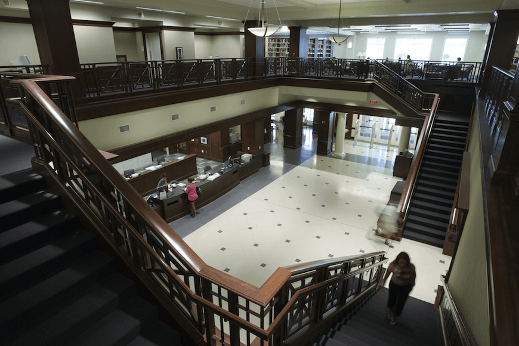
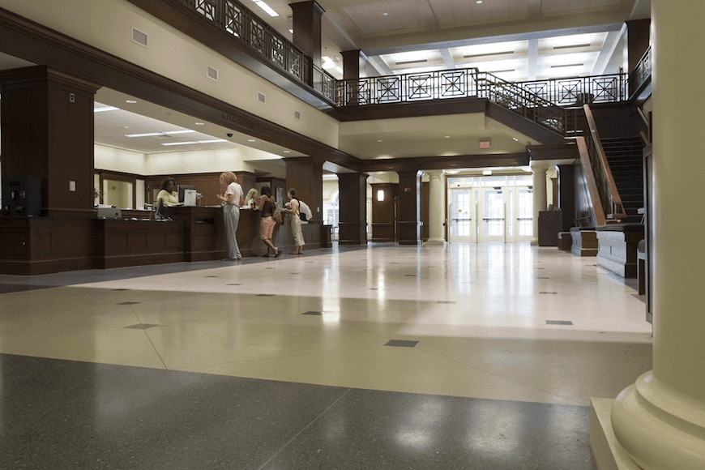
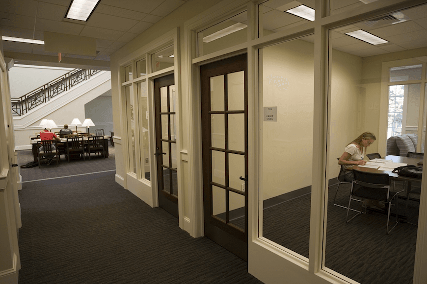
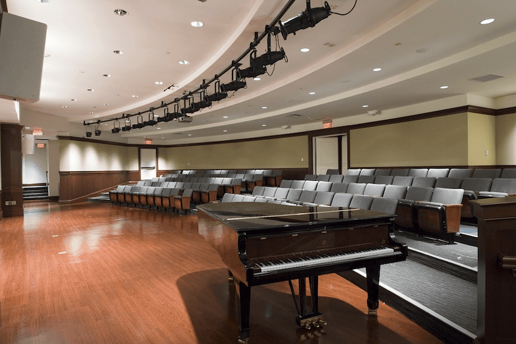
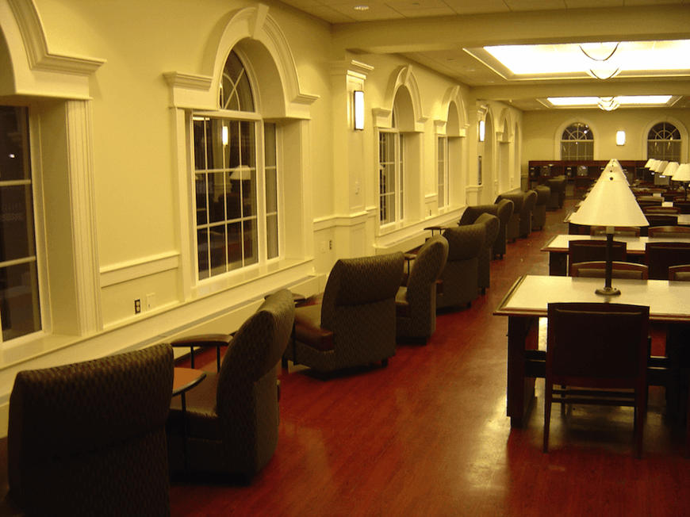

<!--
  Generated template for the Slides page.

  See http://ionicframework.com/docs/v2/components/#navigation for more info on
  Ionic pages and navigation.
-->
<ion-header>

  <ion-navbar>
    <ion-title>Gallery</ion-title>
  </ion-navbar>

</ion-header>

<ion-content>
  
  <!--
  <ion-slides pager="false" (change)="onSlideChanged($event)">
    <ion-slide *ngFor="let img of images">
      
    </ion-slide>
  </ion-slides>
  -->
  
  
  
  
  
  
  
  
  
  
  
  
  
  
  
  
  
  
  
  
  
  
  
  


</ion-content>

